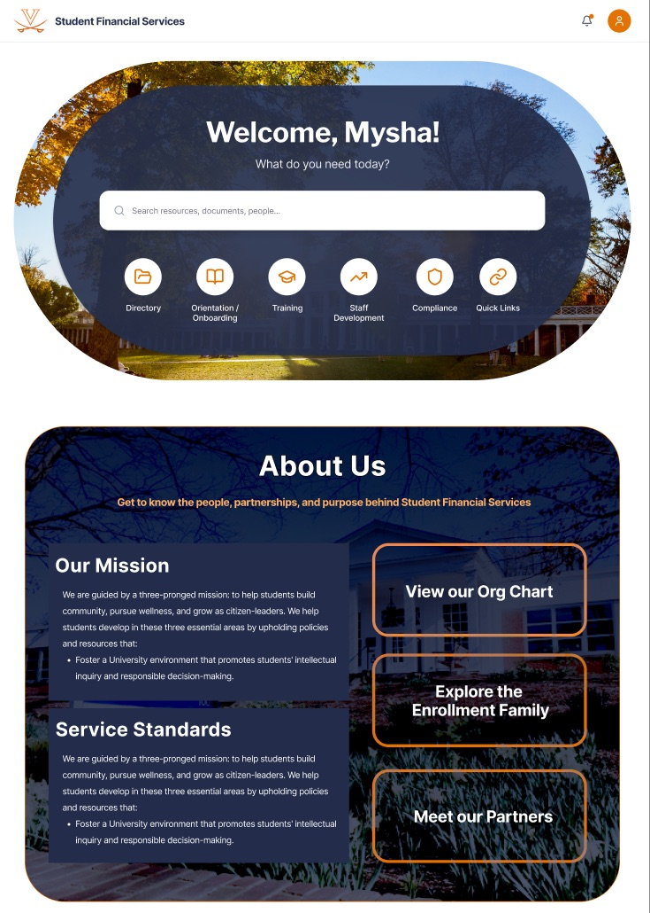
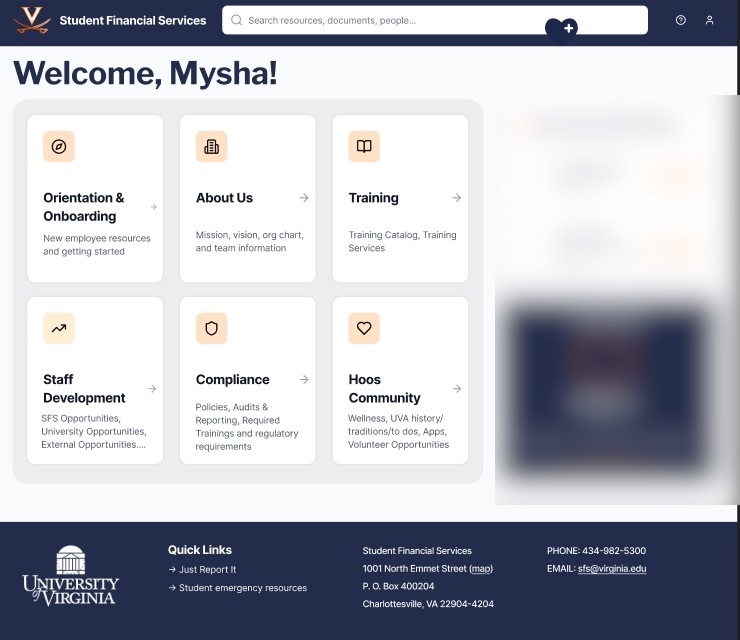
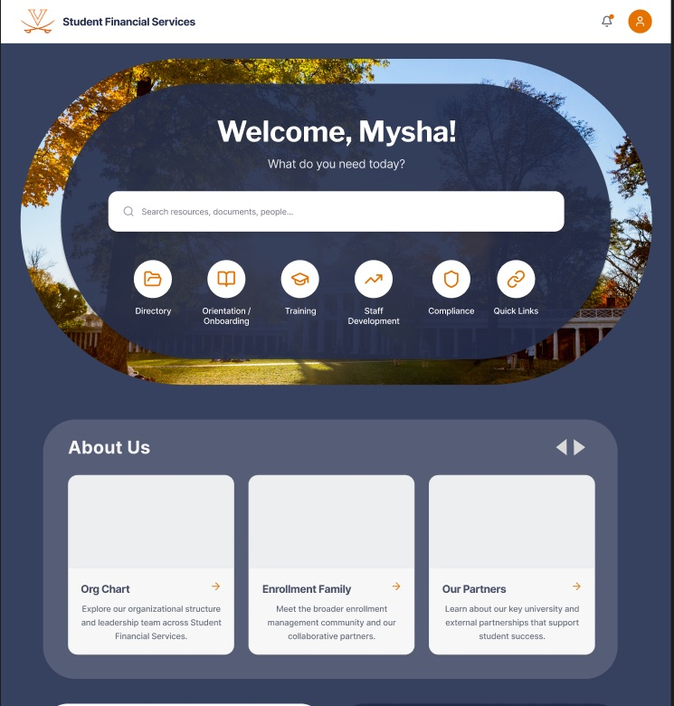
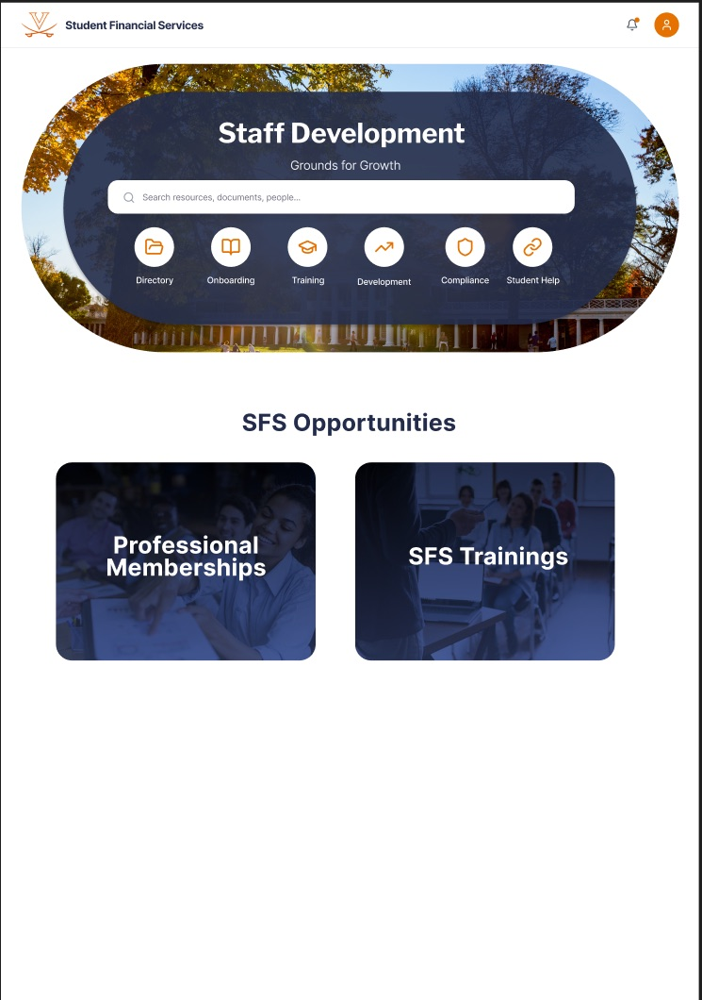
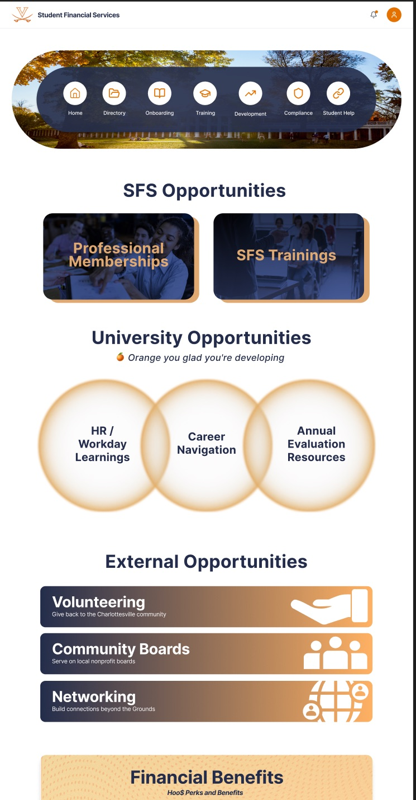
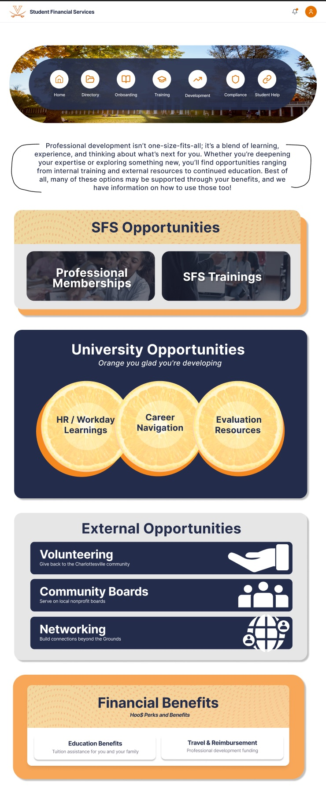
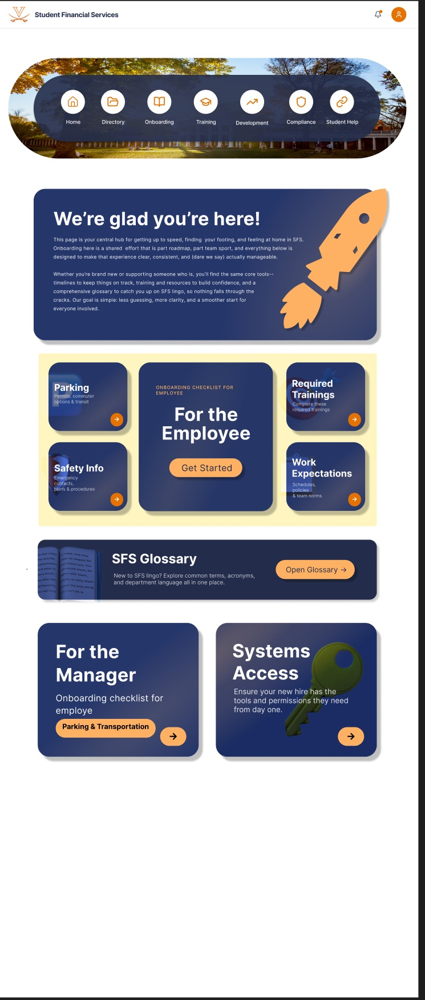
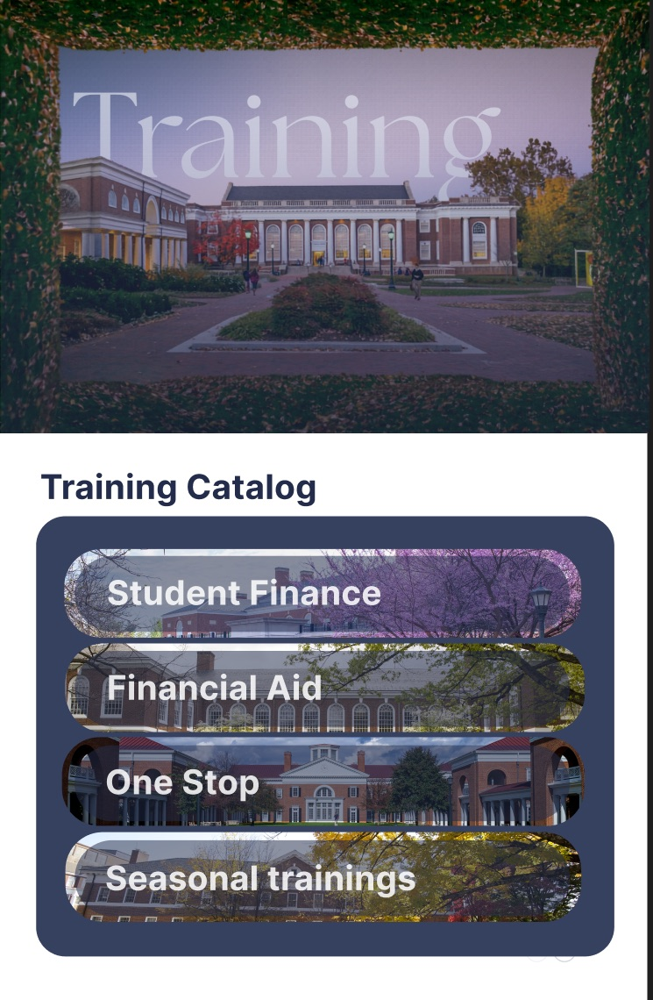
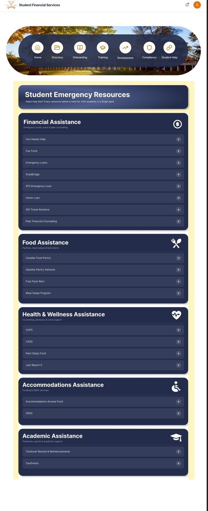

SFS Intranet
A redesigned staff intranet for UVA Student Financial Services. Staff rely on it for policies, trainings, onboarding and resources, but the content was dense and hard to scan. I designed the homepage and 6+ supporting pages in Figma, tested them with staff, and build them as reusable Drupal components.
My role: UI/UX design in Figma, user testing with staff, and front-end build in Drupal and JavaScript.

- Timeline
- Dec 2025 – Present
- Users
- SFS staff and managers
- Scope
- Homepage + 6 supporting pages
- Tools
- Figma, Drupal, JavaScript
01 · Challenge
Dense content, hard to find
The intranet holds everything SFS staff need day to day: onboarding steps, trainings, compliance requirements, development opportunities and emergency resources for students. Most of it is long policy and operational text, which made it slow to scan.
The goal: help staff find what they need in a few seconds, while staying within UVA’s branding.
02 · Homepage
From a card grid to a search-first home
My first layout was a dashboard of equal cards. It covered everything but gave nothing priority. Later versions lead with a personal welcome, a search bar and six quick links (Directory, Onboarding, Training, Staff Development, Compliance and Quick Links), so the most common tasks are one click away. Background on SFS moved into a dedicated About Us section.


03 · Iteration
Making a long page scannable
The Staff Development page shows how the structure evolved. It started as two links, then grew into clear groups (SFS, University and External opportunities, plus Financial Benefits), each with its own visual treatment so staff can jump straight to the right section.



04 · Supporting pages
One system across every page
- Onboarding splits into paths for the new employee and their manager, with a checklist, glossary and systems access in one place.
- Training becomes a catalog of four clear categories instead of a list of links.
- Student Emergency Resources group financial, food, health, accommodations and academic help into expandable sections, so staff can point a student to the right help quickly.



05 · Testing & build
Tested with staff, built to reuse
- Two rounds of user testing with SFS staff. I reworked the navigation and content structure based on their direct feedback.
- Reusable Drupal components built with JavaScript, staying within UVA branding, so future page updates take less time to build.
- Accessible by design: clear headings, readable contrast and consistent navigation across pages.